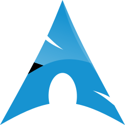

Alpha Tango Kilo
(https://alpha-tango-kilo.xyz)
Who is this Atk fella?
I'm a 20 year old computer science student.
I enjoy any and all things computery - building computers, writing code, playing PC games, the whole shebang
My most recent interest in the computing world has been Linux.
I moved my personal laptop over to Arch Linux in late 2019 and have thoroughly enjoying working out everything as I go, building myself a competent customised workflow from the ground up.
The FOSS community is awesome and I'm trying to find the time to give back to the community amoungst studying
Privacy is also a huge part about the way I conduct myself online.
Facebook, Google, Amazon, and the like possess a very real threat to everyone's privacy, seemingly without anyone caring.
As such, I have been trying to migrate away from these data giants, ditching Gmail, Facebook, Twitch, and so on as I go, while also bolstering my personal security with a password manager and two factor authentication

Where to find me
My GitHub is here, with all my non-university projects: @alpha-tango-kilo
I'm also on Codeberg, as @alpha-tango-kilo once again
Physically, I'm based in the south east of the UK.
You can contact me by email if you have good reason to (please offer me a job): atk [at] aaathats3as [dot] com
I don't maintain any packages yet, but I'm on the AUR under atk
For any other details, please contact me via the means provided above, I don't like to leave too much of my info lying around publicly
GPG fingerprints:
179B CD39 E67A B988 F5A5 C5A0 DD24 FE74 A952 9B99
CD46 D13B 6506 9913 E91E 6904 5EBF CFD7 B274 C63D
Programs I use
Firefox
I browse on Firefox.
If you don't, you're not doing it right.
For the love of god people, get off Chrome please
Great addons I use:
-
Bitwarden - free, open source password manager
-
AdNauseam - a uBlock Origin fork that gives the finger to advertisers
-
Privacy Badger - tracker control (used to complement Firefox's built-in tools)
-
LocalCDN - An active fork of Decentraleyes; emulates CDNs locally for privacy benefits
-
Multi-Account Containers - keep cookies for websites separate so you can't be tracked outside of a given group of sites (like Google ones for instance)
-
User-Agent Switcher - to spoof the device you're browsing from
-
Tabliss - free, open source aesthetic new tab page (like Momentum, but FOSS)
-
Wikiwand - modernises Wikipedia
-
Watch on LBRY - redirects YouTube to LBRY if the video is available there

Programming
My monospace font of choice is Jetbrains Mono for its readability and ligature support. (I am a huge ligature fan!)
For serious coding, I love using the Jetbrains IDEs.
I've mostly used IntelliJ and PyCharm, but I'd recommend the suite to anyone.
Within the Jetbrains IDEs, I consider the Material Theme plugin essential to bring the UI into 2020.
I use Material Darker of the themes it provides
For casual projects (scripting languages or ones otherwise unsupported by Jetbrains), Visual Studio Code is my go-to
If I'm feeling hardcore or just making quick changes, Neovim does the trick nicely.
I am by no means a Vim power user, but I can save & quit

GNU + Linux
Oh look, another Arch user.
No surprises here, am I right?
The best place to see more of my Linux lifestyle is over in my dotfiles repository.
In short, I currently use the i3-gaps window manager with st as my terminal of choice.
I'm working on further patching st, so keep an eye on my Github repo for that.
I'm also currently hacking Qtile into shape to potentially move to that
Other distros I'm interested in (in no particular order):
-
NixOS - the declarative configuration and package management seems interesting
-
ArcoLinux - Arch Linux without the full manual setup
-
Gentoo - is the extra performance worth the compile times?

Android
My current phone is the OnePlus 5T.
I have no reason (besides perhaps camera quality) or spare cash to upgrade.
I run unrooted with the stock OxygenOS ROM, phone tinkering doesn't interest me that much honestly
App recommendations:
-
Signal - a fully open source pretty darn secure WhatsApp alternative.
While not the most uber-secure of the options out there, Signal is fleshed out well with features, making it easier to adopt for more people
-
andOTP - a free, open source 2FA solution that allows for encrypted backups of secret keys (unlike Google Authenticator)
-
YouTube Vanced - an alternative YouTube client with no ads, AMOLED dark theme, and lots of nice-to-have settings.
Not on the Google Play Store, fairly obviously
-
Flud - the only modern-looking feature rich torrenting app for Android, not that I would typically torrent on mobile
-
Sync for reddit - a 3rd party Reddit client that's being actively developed and has more settings/customisation than you could ever need
-
Polytopia - the only mobile game I'd ever recommend to anyone.
Turn based strategy game with no stereotypical mobile game bullshit

Mechanical keyboards
So I recently took the plunge into the ergonomic high end mechanical keyboard world and purchased myself an ErgoDox EZ.
Currently, I'm still in the "oh god what have I done" stage, where typing is slow and clunky and please don't ask me where any of the symbols are.
I'll make my layout public at some point but I would never expect anyone to use it really, as it's a very personal thing, at least for me
As for mechanical keyboards as a broader topic, they do greatly interest me as I feel like I'm barely scratching the surface currently.
I really wish there was a better way to test out different switches than just having to commit to a keyboard full of ones I've never used.
Now I have a keyboard with Cherry MX Browns, and while I love how quiet they are compared to my old Quickfire TK with Cherry MX Blues, I wouldn't have chosen them based on the feel if I'd been able to try before I bought
I totally want to get a set of custom keycaps at some point though, either a super large simple legend or a set of dot keycaps (like the GMK Dots).
I do need that RGB support though so that makes things a tad trickier, but I do unironically find the backlighting useful when it's dark, I'm not just in it for the rainbow barf
Headphones
As with mechanical keyboards, another hobby which I wish I had more time and money for is headphones (earphones too).
I currently just listen to music off of my phone or computer directly, no fancy DACs or amps.
Prodominantly, I listen to EDM, enjoying house, bounce, trap, and dance
I use SoundCloud for all my playlists, given it's free, and can be adblocked on browser and mobile.
I typically grow a playlist until it's at 100 songs then start a new one, it's a nice round number that strikes a decent balance between not getting bored of the first songs you've added and having a long total running time.
There is no particular organisation to most of my playlists in terms of genre
For headphones, I currently have the entry level Audio-Technica ATH-M50x with Brainwavz memory foam pads.
Love them, wonderful, do really enjoy.
I can wear them for hours without issue
For earphones, I actually carry around the super-budget VE Monk Plus (AliExpress link).
Despite the $5 price tag, I love the sound quality (how you know I'm not an audiophile yet lol), they're impressively bassy for earphones, and they're comfortable for me - I actually have yet to find IEMs I find comfortable.
I did actually splurge at one point to try the iBasso IT01, but I just couldn't get them both comfortable and properly sealed
I currently have my eyes on the Drop + THX Panda.
Better sound quality, sleek minimal no-brand aesthetic, and wireless connectivity 😍
Trying to get my current side job finished so I can place my order!